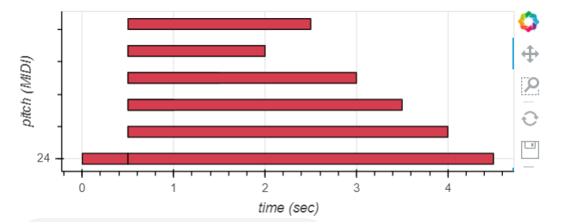
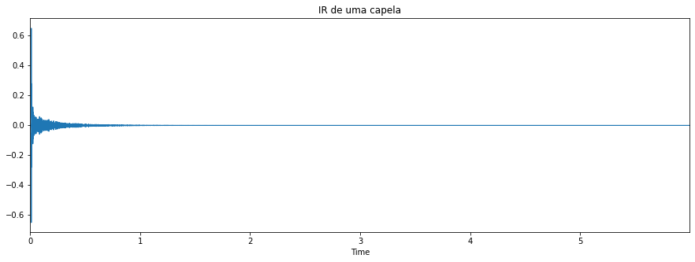

Áudio criado em MIDI
O áudio em MIDI criado é a reprodução de algumas notas musicais.

Áudio MIDI criado.
Resposta ao Impulso em diferentes ambientes
O áudio gerado em cada um desses ambientes pode ser escutado na página do Colab.
Resposta ao Impulso em diferentes ambientes para um áudio da web
Os áudios em ambientes diferentes com um áudio da web podem ser escutados no Colab.